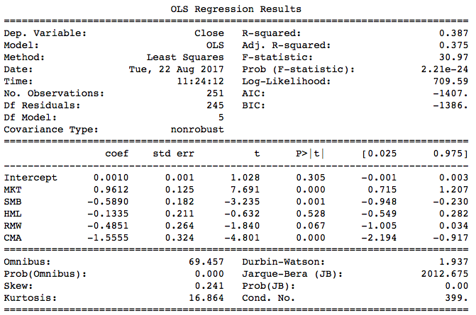
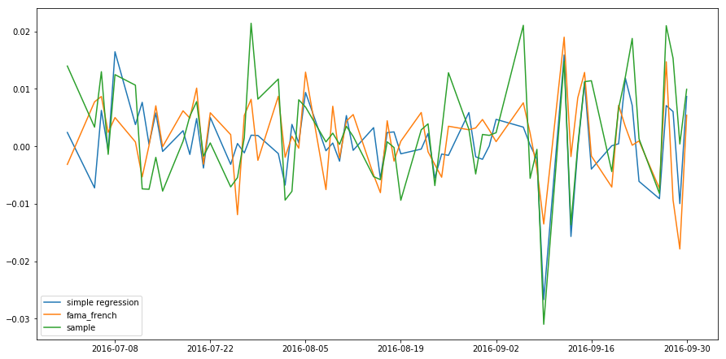
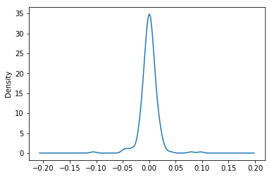
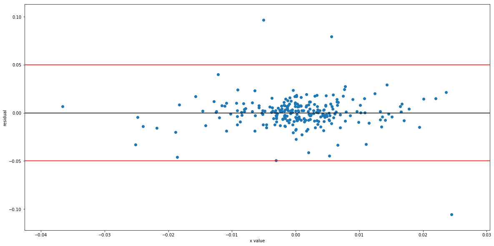

In the last chapter we introduced simple linear regression, which has only one independent variable. In this chapter we will learn about linear regression with multiple independent variables.
A simple linear regression model is written in the following form:
\[ Y = \alpha + \beta X + \epsilon \]
A multiple linear regression model with p variables is given by:
\[ Y = \alpha + \beta_1 X_1 + \beta_2 X_2 + \dots + \beta_p X_p + \epsilon \]
Python Implementation
In the last chapter we used the S&P 500 index to predict Amazon stock returns. Now we will add more variables to improve our model's predictions. In particular, we shall consider Amazon's competitors.
import numpy as np
import pandas as pd
import quandl
import matplotlib.pyplot as plt
import statsmodels.formula.api as sm
# Get stock prices
quandl.ApiConfig.api_key = 'tAyfv1zpWnyhmDsp91yv'
spy_table = quandl.get('BCIW/_SPXT')
amzn_table = quandl.get('WIKI/AMZN')
ebay_table = quandl.get('WIKI/EBAY')
wal_table = quandl.get('WIKI/WMT')
aapl_table = quandl.get('WIKI/AAPL')
Then we fetch closing prices starting from 2016:
spy = spy_table .loc['2016',['Close']]
amzn = amzn_table.loc['2016',['Close']]
ebay = ebay_table.loc['2016',['Close']]
wal = wal_table .loc['2016',['Close']]
aapl = aapl_table.loc['2016',['Close']]
After taking log returns of each stock, we concatenate them into a DataFrame, and print out the last 5 rows:
spy_log = np.log(spy.Close) .diff().dropna()
amzn_log = np.log(amzn.Close).diff().dropna()
ebay_log = np.log(ebay.Close).diff().dropna()
wal_log = np.log(wal.Close) .diff().dropna()
aapl_log = np.log(aapl.Close).diff().dropna()
df = pd.concat([spy_log,amzn_log,ebay_log,wal_log,aapl_log],axis = 1).dropna()
df.columns = ['SPY', 'AMZN', 'EBAY', 'WAL', 'AAPL']
df.tail()
| Date |
SPY |
AMZN |
EBAY |
WAL |
AAPL |
| 2016-12-23 |
0.001351 |
-0.007531 |
0.008427 |
-0.000719 |
0.001976 |
| 2016-12-27 |
0.002254 |
0.014113 |
0.014993 |
0.002298 |
0.006331 |
| 2016-12-28 |
-0.008218 |
0.000946 |
-0.007635 |
-0.005611 |
-0.004273 |
| 2016-12-29 |
-0.000247 |
-0.009081 |
-0.001000 |
-0.000722 |
-0.000257 |
| 2016-12-30 |
-0.004601 |
-0.020172 |
-0.009720 |
-0.002023 |
-0.007826 |
As before, we use the 'statsmodels' package to perform simple linear regression:
simple = sm.ols(formula = 'amzn ~ spy', data = df).fit()
print simple.summary()
| |
coef |
std err |
t |
P>|t| |
[0.025 |
0.975] |
| Intercept |
9.876e-05 |
0.001 |
0.097 |
0.923 |
-0.002 |
0.002 |
| spy |
1.0796 |
0.124 |
8.725 |
0.000 |
0.836 |
1.323 |
Similarly, we can build a multiple linear regression model:
model = sm.ols(formula = 'amzn ~ spy + ebay + wal', data = df).fit()
print model.summary()
| |
coef |
std err |
t |
P>|t| |
[0.025 |
0.975] |
| Intercept |
0.0001 |
0.001 |
0.134 |
0.894 |
-0.002 |
0.002 |
| spy |
1.0468 |
0.170 |
6.155 |
0.000 |
0.712 |
1.382 |
| ebay |
-0.0795 |
0.058 |
-1.364 |
0.174 |
-0.194 |
0.035 |
| wal |
-0.0865 |
0.089 |
-0.976 |
0.330 |
-0.261 |
0.088 |
| aapl |
0.1529 |
0.084 |
1.831 |
0.068 |
-0.012 |
0.317 |
As seen from the summary table, the p-values for Ebay, Walmart and Apple are 0.174, 0.330 and 0.068 respectively, so none of them are significant at a 95% confidence level.
The multiple regression model has a higher \( R^2 \) than the simple one: 0.254 vs 0.234. Indeed, \( R^2 \) cannot decrease as the number of variables increases. Why? If an extra variable is added to our regression model, but it cannot account for variations in the response (amzn), then its estimated coefficient will simply be zero. It's as though that variable was never included in the model, so \( R^2 \) will not change.
However, it is not always better to add hundreds of variables or we will overfit our model. We'll talk about this in a later chapter.
Can we improve our model further? Here we try the Fama-French 5-factor model, which is an important model in asset pricing theory. We will cover it in the later tutorials.
The data needed are publicly available on French's website.[ref]mba.tuck.dartmouth.edu/pages/faculty/ken.french/Data_Library/f-f_factors.html[/ref] We have saved a copy for convenience. The following code fetches the data.
import urllib2
from datetime import datetime
url = 'https://www.quantconnect.com/tutorials/wp-content/uploads/2017/08/F-F_Research_Data_5_Factors_2x3_daily.csv'
response = urllib2.urlopen(url)
fama_table = pd.read_csv(response)
# Convert time column into index
fama_table.index = [datetime.strptime(str(x), "%Y%m%d")
for x in fama_table.iloc[:,0]]
# Remove time column
fama_table = fama_table.iloc[:,1:]
With the data, we can construct a Fama-French factor model:
fama = fama_table['2016']
fama = fama.rename(columns = {'Mkt-RF':'MKT'})
fama = fama.apply(lambda x: x/100)
fama_df = pd.concat([fama, amzn_log], axis = 1)
fama_model = sm.ols(formula = 'Close~MKT+SMB+HML+RMW+CMA', data = fama_df).fit()
print fama_model.summary()

The Fama-French 5-factor model has a higher \( R^2 \) of 0.387. We can compare the predictions from simple linear regression and Fama-French multiple regression by plotting them together on one chart:
result = pd.DataFrame({'simple regression': simple.predict(),
'fama_french': fama_model.predict(),
'sample': df.amzn}, index = df.index)
# Feel free to adjust the chart size
plt.figure(figsize = (15,7.5))
plt.plot(result['2016-7':'2016-9'].index,result.loc['2016-7':'2016-9','simple regression'])
plt.plot(result['2016-7':'2016-9'].index,result.loc['2016-7':'2016-9','fama_french'])
plt.plot(result['2016-7':'2016-9'].index,result.loc['2016-7':'2016-9','sample'])
plt.legend()
plt.show()

Although it's hard to see from the chart above, the predicted return from multiple regression is closer to the actual return. Usually we don't plot the predictions to determine which model is better; we read the summary table.
Model Significance Test
Instead of using \( R^2 \) to assess whether our regression model is a good fit to the data, we can perform a hypothesis test: the F test.
The null and alternative hypotheses of an F test are:
\[ H_0: \beta_1 = \beta_2 = \dots = \beta_p = 0 \]
\[ H_1: \text{At least one coefficient is not 0} \]
We won't explain F test procedure in detail here. You just need to understand the null and alternative hypotheses. In the summary table of an F test, the 'F-statistic' is the F score, while 'prob (F-statistic)' is the p-value. Performing this test on the Fama-French model, we get a p-value of `2.21e-24` so we are almost certain that at least one of the coefficient is not 0.
If the p-value is larger than 0.05, you should consider rebuilding your model with other independent variables.
In simple linear regression, an F test is equivalent to a t test on the slope, so their p-values will be the same.
Residual Analysis
Linear regression requires that the predictors and response have a linear relationship. This assumption holds if the residuals are zero on average, no matter what values the predictors \( X_1, \dots, X_p \) take.
Often it's also assumed that the residuals are independent and normally distributed with the same variance (homoskedasticity), so that we can contruct prediction intervals, for example.
To check whether these assumptions hold, we need to analyse the residuals. In statistical arbitrage, residual analysis can also be used to generate signals.
Normality
The residuals of a linear model usually has a normal distribution. We can plot the residual's density to check for normality:
plt.figure()
#ols.fit().model is a method to access to the residual.
fama_model.resid.plot.density()
plt.show()

As seen from the plot, the residual is normally distributed. By the way, the residual mean is always zero, up to machine precision:
print 'Residual mean:', np.mean(fama_model.resid)
[out]: Residual mean: -2.31112163493e-16
print 'Residual variance:', np.var(fama_model.resid)
[out]: Residual variance: 0.000205113416293
Homoskedasticity
This word is difficult to pronounce but not difficult to understand. It means that the residuals have the same variance for all values of X. Otherwise we say that 'heteroskedasticity' is detected.
plt.figure(figsize = (20,10))
plt.scatter(df.spy,simple.resid)
plt.axhline(0.05)
plt.axhline(-0.05)
plt.xlabel('x value')
plt.ylabel('residual')
plt.show()

As seen from the chart, the residuals' variance doesn't increase with X. The three outliers do not change our conclusion. Although we can plot the residuals for simple regression, we can't do this for multiple regression, so we use statsmodels to test for heteroskedasticity:
from statsmodels.stats import diagnostic as dia
het = dia.het_breuschpagan(fama_model.resid,fama_df[['MKT','SMB','HML','RMW','CMA']][1:])
print 'p-value: ', het[-1]
[out]:p-value of Heteroskedasticity: 0.144075842844
No heteroskedasticity is detected at the 95% significance level.
Summary
In this chapter we have introduced multiple linear regression, F test and residual analysis, which are the fundamentals of linear models. In the next chapter we will introduce some linear algebra, which are used in modern portfolio theory and CAPM.